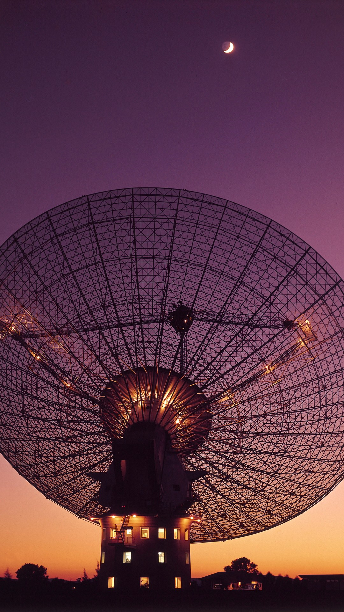

Yes. In April and May 2019, the Parkes radio telescope in New South Wales, Australia, recorded a narrow radio signal at 982.002 megahertz while it was pointed at Proxima Centauri, the closest star to our Sun. Breakthrough Listen logged it as BLC1, Breakthrough Listen Candidate 1. It was the first signal in the program's history to pass every filter the team had built to catch human interference. It appeared only when the dish faced the star. Its frequency drifted in a way that matches no transmitter on the ground. Nobody has ever named a source for it, and it has never been heard again.
The star it came from is 4.24 light years away. It has a planet orbiting in the zone where liquid water can exist. And the one time humanity listened to that star for thirty straight hours, something answered on a single, pinpoint frequency.

Thirty Hours On The Nearest Star
The listening campaign ran in spring 2019 on the 64-metre Parkes dish, run by Australia's national science agency CSIRO and now called Murriyang. Breakthrough Listen, the $100 million search launched in 2015 with backing from Yuri Milner, borrowed the dish to watch Proxima Centauri for stellar flares.
The team logged roughly thirty hours on the star across April and May. The receivers swept the band between 704 megahertz and 4 gigahertz, and the recordings were fine enough to split the radio sky into slices a few hertz wide.
That resolution is the whole point. Nature makes radio noise that smears across thousands of hertz. A beam squeezed into a few hertz is the signature of a machine. Every radio astronomer alive works from that same rule.
A Signal That Followed The Star
BLC1 sat at 982.002 megahertz. It was narrow enough to call engineered on sight, and it held steady across several hours of recordings.
Breakthrough Listen tests every candidate with a cadence. The dish points at the target, swings away to an empty patch of sky, then swings back. A signal from the star shows up in the on-target scans and drops out in the off-target scans.
BLC1 did exactly that. It was present when Parkes looked at Proxima. It was gone when Parkes looked away. It came back when Parkes returned. Local interference leaks into the receiver wherever the dish points. This signal kept to one direction in the sky, and that direction held the nearest star we have.
The Drift That Gave It Away
The frequency of BLC1 shifted slowly over time, climbing by about 0.03 hertz every second. Astronomers call this drift, and drift is where the case gets dangerous.
A transmitter bolted to the ground near Parkes turns with the dish. Both ride the same spin of the Earth at the same speed, so relative to the receiver that transmitter shows no Doppler drift at all. Every phone tower, radar and broadcast mast on the planet carries that fingerprint of zero motion.
BLC1 carried motion. Its drift said the source was moving relative to the telescope, and the direction it moved did not match what the team expected from the dish's own ride on the turning Earth. A source moving on its own path, separate from our planet, is what that drift describes.
Every transmitter on Earth spins with the dish and shows no drift. BLC1 drifted. Something carrying that signal was moving on a path of its own.
Eighteen Months On A Hard Drive
BLC1 sat unseen in the archive for over a year. Shane Smith, an undergraduate intern working with the Breakthrough Listen team, found it in mid-2020 while combing the Proxima recordings.
The public learned about it from a leak. The Guardian broke the story on December 18, 2020, and Scientific American followed within hours. Breakthrough Listen had held the candidate internally for months without announcing it.
The team pointed Parkes back at Proxima Centauri in the months that followed. They listened at 982.002 megahertz and the frequencies around it. The signal never returned. A broken piece of local gear keeps broadcasting until somebody switches it off. BLC1 spoke during one campaign and then stopped.
The 2021 Papers Named No Transmitter
On October 25, 2021, two papers landed in Nature Astronomy. Smith and colleagues described the search. Sofia Sheikh and colleagues analysed BLC1 itself and labelled it interference.
Sheikh's team built that verdict on lookalikes. They found other signals in the data at frequencies tied by simple arithmetic to common clock oscillators, and argued BLC1 was an intermodulation product, two pieces of human electronics mixing into a ghost.
Here is what that argument leaves standing. The lookalikes showed up in the off-target scans, which marks them as local noise. BLC1 showed up only on target. The papers pointed to a family resemblance and stopped there. No device, no building and no frequency plan was ever produced. A verdict with no culprit is a description of the gap.
| What BLC1 did | What the 2021 interference verdict needs |
|---|---|
| Appeared only when Parkes pointed at Proxima Centauri | A local source that somehow hid during every off-target scan |
| Drifted at about 0.03 Hz per second | A ground transmitter showing motion that ground transmitters do not carry |
| Passed every Breakthrough Listen interference filter | A filter set built by the same team that let a human ghost straight through |
| Never repeated in follow-up observations | A broken device that ran for one campaign and then went silent forever |
| Source never located | A named transmitter, which no paper has produced |
Read the right column again. Each line asks the reader to accept a stranger coincidence than the one on the left. Stack all five together and the interference reading is the harder story to believe.
A Star With A Planet In The Right Place
Proxima Centauri is a red dwarf in the Alpha Centauri system. In August 2016 the European Southern Observatory announced Proxima b, a world slightly more massive than Earth, orbiting inside the star's habitable zone.
That planet circles its star every 11.2 days. A transmitter on its surface would rise, set and race around Proxima, and every one of those motions leaves a drift in the radio signal reaching Earth. A drifting signal is what a moving world sends.
Three facts line up on a single star. The nearest star to us has a planet where water can pool. The only full-filter candidate in Breakthrough Listen's history came from its direction. And that candidate drifted like a source in motion. The files that hold signals like this one, from the Wow! signal in 1977 onward, are laid out in our Classified Case Files, and the wider record of what has been heard and buried lives in the Vault.
BLC1 has been quiet since spring 2019. The dish still points at Proxima from time to time, the archive still holds those thirty hours, and the one signal that passed every test still has no source.
So ask the question the 2021 papers never answered. If BLC1 was human interference, which machine on Earth was moving on its own path through space, and why did it only switch on when we were looking at the nearest star?
Frequently Asked
What was the BLC1 signal?
BLC1 was a narrow radio signal at 982.002 megahertz recorded by the Parkes telescope in Australia in April and May 2019 while it watched Proxima Centauri. It was the first candidate in Breakthrough Listen's history to pass every filter for human interference.
Why does the drift of BLC1 matter?
Ground transmitters spin with the Earth alongside the dish, so they show no Doppler drift. BLC1 drifted at about 0.03 hertz per second, which marks a source moving relative to the telescope, the way a transmitter on a moving planet would.
Did scientists find what caused BLC1?
Two Nature Astronomy papers in October 2021 labelled it interference based on lookalike signals in the data. Neither paper identified a device, a location, or a transmitter, and the source remains unnamed.
Has the Proxima Centauri signal been detected again?
Parkes returned to Proxima Centauri after the 2019 campaign and listened at the same frequency. BLC1 never came back.
Could a planet around Proxima Centauri send a signal?
Proxima b orbits inside the star's habitable zone every 11.2 days and was confirmed in 2016. A transmitter on that world would produce exactly the kind of drifting signal BLC1 showed.
Before you go
7 books the Vatican doesn't want you reading. Free PDF. The texts they cut, with sources. Joined by 300+ Inner Circle members.
No spam. Unsubscribe anytime.
Go deeper
The Hidden Canon, Vol. I: Enoch. Jubilees. Thomas. Mary. Judas. 90 pages, 14 chapters, every receipt cited. The books your Bible quietly removed.
Read the Canon →